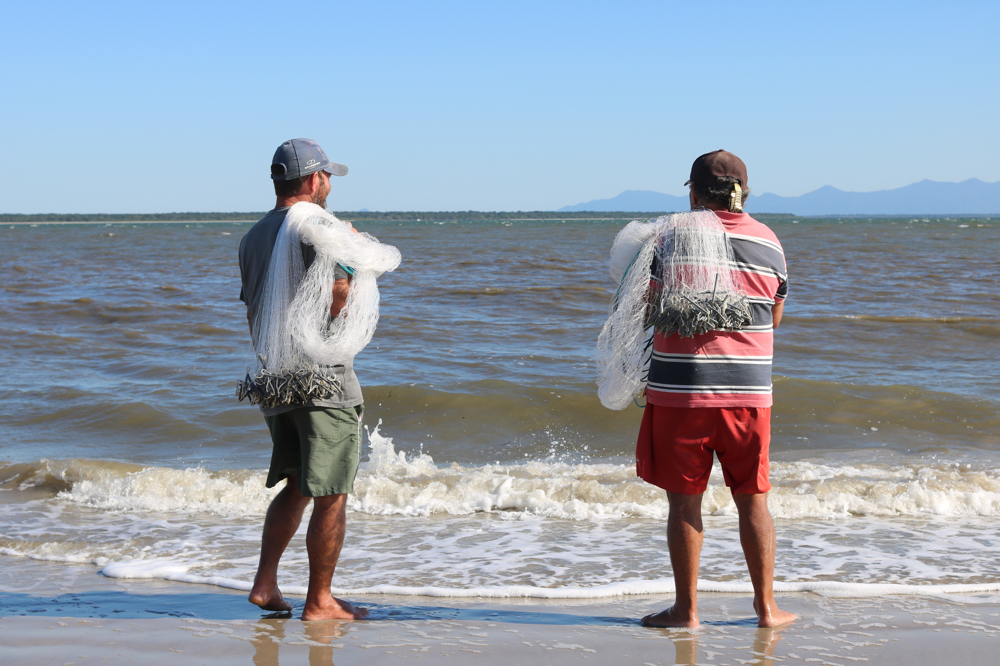
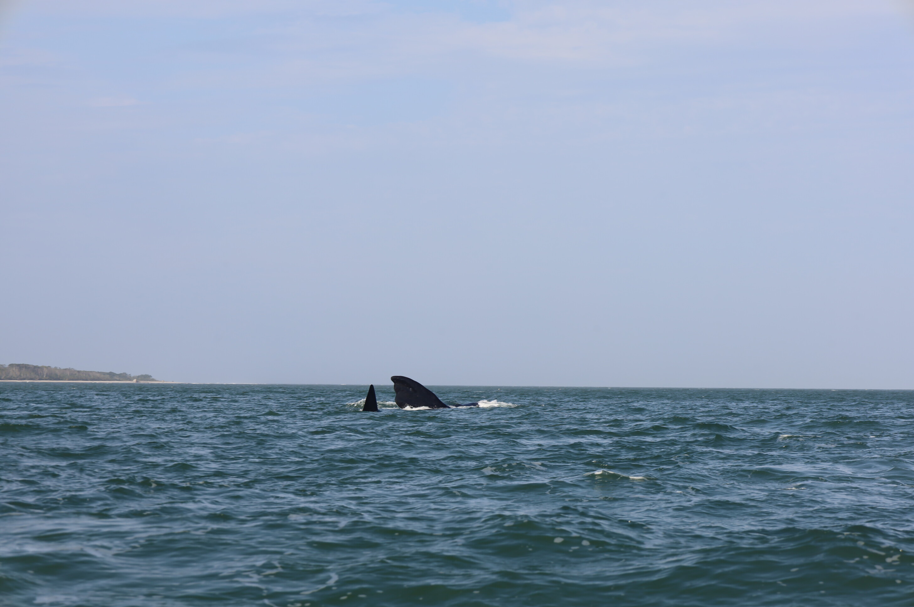
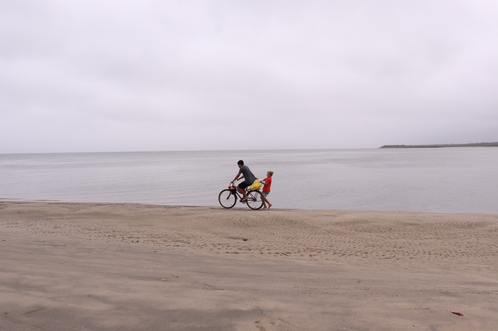
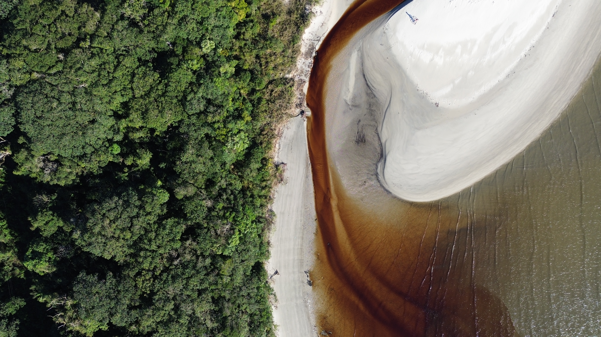
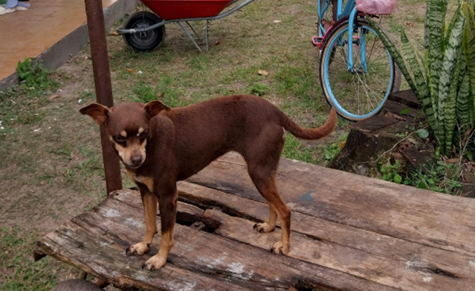
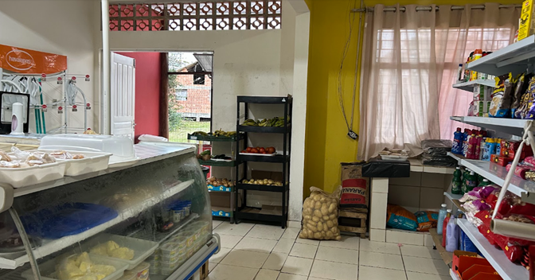
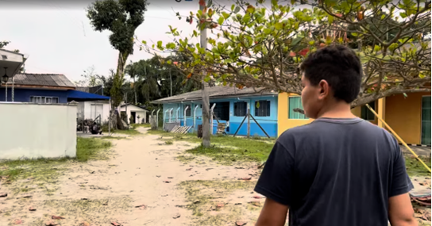
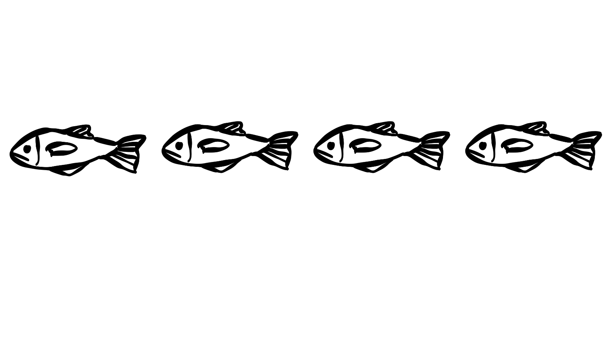
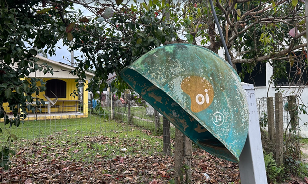

O litoral do Paraná, que é o menor dentre os estados costeiros do país, tem uma extensão territorial de cerca de
98 km a 105 km de extensão. É composto por sete municípios e destaca-se por sua rica natureza, abrigando mais
de 120 praias, 50 ilhas e importantes áreas portuárias, como a de Paranaguá, uma das maiores do Brasil.
(SECRETARIA ESTADUAL DO TURISMO, 2025). O clima do litoral paranaense é predominantemente subtropical
úmido, sem um período seco definido, com verões quentes e geadas menos frequentes, as chuvas se tornam ainda
mais abundantes e as temperaturas no verão não chegam a ser tão altas. As temperaturas médias anuais
situam-se entre 19°C e 21°C, enquanto a precipitação média anual ultrapassa 2.000 mm, com maior concentração
de chuvas nos meses de verão. A influência do Oceano Atlântico e da Serra do Mar contribui para a elevada
umidade e para a regular distribuição das chuvas ao longo do ano. (Vanhoni; Mendonça, 2008).
Essa dinâmica atmosférica é controlada pela interação de sistemas tropicais e polares, além da forte influência do
oceano e do próprio relevo da região (Vanhoni; Mendonça, 2008). Mas, atualmente há alterações promovidas pelas
mudanças climáticas em curso, e por fenômenos cíclicos como o El Niño e La Niña, que também se intensificam.
98–105km de extensão
7municípios
120+praias
50ilhas
O Surgimento
Linha do tempo histórica da região das ilhas
Clique nos pontos para explorar
Parque Nacional de Superagui
Nesse litoral, as comunidades da Ilha das Peças e da Ilha de Superagui estão localizadas no município de
Guaraqueçaba. O município situa-se a 169 quilômetros de Curitiba e nele se localiza o Parque Nacional de
Superagui, na ilha do mesmo nome e em parte da Ilha das Peças. A área de proteção ambiental foi criada em 1989
com o objetivo de preservar ecossistemas da Mata Atlântica e modos de vida tradicionais. A unidade de
conservação possui uma área de 33.928,00 hectares, conforme dados do Instituto Chico Mendes de Conservação
da Biodiversidade - ICMBio (2024), órgão federal responsável pelo território protegido. A região é historicamente
ocupada por populações caiçaras, formadas pela miscigenação entre povos indígenas, europeus e africanos, que
desenvolveram formas de subsistência diretamente ligadas ao território, especialmente à pesca artesanal e ao uso
dos recursos naturais.
Guaraqueçaba e os territórios não urbanos
Guaraqueçaba possui uma área de 201.135,70 hectares e, conta com aproximadamente 7.430 habitantes. Desse
total, 4.686 correspondem à população não urbana e 2.744 à população urbana, conforme o Censo de 2010. (IBGE,
2010). As comunidades das ilhas do litoral do Paraná, como a Ilha das Peças e de Superagui, enquadram-se como
não urbanas, tanto por sua localização fora dos perímetros urbanos quanto por características como o isolamento
geográfico, o acesso majoritariamente realizado por vias marítimas, a baixa densidade populacional e a limitada
presença de equipamentos e serviços públicos. Além disso, essas localidades apresentam dinâmicas sociais e
econômicas fortemente vinculadas a práticas tradicionais, como a pesca artesanal e o uso direto dos recursos
naturais, o que as distanciam ainda mais dos padrões urbanos convencionais, reforçando sua classificação
enquanto territórios não urbanos (IBGE 2010).
Conheça a comunidade e a sua cultura
Slides de fotos da ilha
O litoral do Paraná, que é o menor dentre os estados costeiros do país, tem uma extensão territorial de cerca de
98 km a 105 km de extensão. É composto por sete municípios e destaca-se por sua rica natureza, abrigando mais
de 120 praias, 50 ilhas e importantes áreas portuárias, como a de Paranaguá, uma das maiores do Brasil.
(SECRETARIA ESTADUAL DO TURISMO, 2025). O clima do litoral paranaense é predominantemente subtropical
úmido, sem um período seco definido, com verões quentes e geadas menos frequentes, as chuvas se tornam ainda
mais abundantes e as temperaturas no verão não chegam a ser tão altas. As temperaturas médias anuais
situam-se entre 19°C e 21°C, enquanto a precipitação média anual ultrapassa 2.000 mm, com maior concentração
de chuvas nos meses de verão. A influência do Oceano Atlântico e da Serra do Mar contribui para a elevada
umidade e para a regular distribuição das chuvas ao longo do ano. (Vanhoni; Mendonça, 2008).
Essa dinâmica atmosférica é controlada pela interação de sistemas tropicais e polares, além da forte influência do
oceano e do próprio relevo da região (Vanhoni; Mendonça, 2008). Mas, atualmente há alterações promovidas pelas
mudanças climáticas em curso, e por fenômenos cíclicos como o El Niño e La Niña, que também se intensificam.
Nesse litoral, as comunidades da Ilha das Peças e da Ilha de Superagui estão localizadas no município de
Guaraqueçaba. O município situa-se a 169 quilômetros de Curitiba e nele se localiza o Parque Nacional de
Superagui, na ilha do mesmo nome e em parte da Ilha das Peças. A área de proteção ambiental foi criada em 1989
com o objetivo de preservar ecossistemas da Mata Atlântica e modos de vida tradicionais. A unidade de
conservação possui uma área de 33.928,00 hectares, conforme dados do Instituto Chico Mendes de Conservação
da Biodiversidade - ICMBio (2024), órgão federal responsável pelo território protegido. A região é historicamente
ocupada por populações caiçaras, formadas pela miscigenação entre povos indígenas, europeus e africanos, que
desenvolveram formas de subsistência diretamente ligadas ao território, especialmente à pesca artesanal e ao uso
dos recursos naturais.
Guaraqueçaba possui uma área de 201.135,70 hectares e, conta com aproximadamente 7.430 habitantes. Desse
total, 4.686 correspondem à população não urbana e 2.744 à população urbana, conforme o Censo de 2010. (IBGE,
2010). As comunidades das ilhas do litoral do Paraná, como a Ilha das Peças e de Superagui, enquadram-se como
não urbanas, tanto por sua localização fora dos perímetros urbanos quanto por características como o isolamento
geográfico, o acesso majoritariamente realizado por vias marítimas, a baixa densidade populacional e a limitada
presença de equipamentos e serviços públicos. Além disso, essas localidades apresentam dinâmicas sociais e
econômicas fortemente vinculadas a práticas tradicionais, como a pesca artesanal e o uso direto dos recursos
naturais, o que as distanciam ainda mais dos padrões urbanos convencionais, reforçando sua classificação
enquanto territórios não urbanos (IBGE 2010).
O litoral do Paraná, que é o menor dentre os estados costeiros do país, tem uma extensão
territorial de cerca de 98 km a 105 km de extensão. É composto por sete municípios e destaca-se
por sua rica natureza, abrigando mais de 120 praias, 50 ilhas e importantes áreas
portuárias, como a de Paranaguá, uma das maiores do Brasil. (SECRETARIA ESTADUAL DO
TURISMO, 2025). O clima do litoral paranaense é predominantemente subtropical úmido,
Renato Caiçara mostrando a torre do Mato da Ilha que fazia parte de um antigo sistema de controle e vigilância da navegação na baía de Paranaguá. Autoria da foto: Daniel Chapaval
O litoral do Paraná, que é o menor dentre os estados costeiros do país, tem uma extensão territorial de cerca de
98 km a 105 km de extensão. É composto por sete municípios e destaca-se por sua rica natureza, abrigando mais
de 120 praias, 50 ilhas e importantes áreas portuárias, como a de Paranaguá, uma das maiores do Brasil.
(SECRETARIA ESTADUAL DO TURISMO, 2025). O clima do litoral paranaense é predominantemente subtropical
úmido, sem um período seco definido, com verões quentes e geadas menos frequentes, as chuvas se tornam
ainda mais abundantes e as temperaturas no verão não chegam a ser tão altas. As temperaturas médias anuais
situam-se entre 19°C e 21°C, enquanto a precipitação média anual ultrapassa 2.000 mm, com maior
concentração de chuvas nos meses de verão. A influência do Oceano Atlântico e da Serra do Mar contribui para a
elevada umidade e para a regular distribuição das chuvas ao longo do ano. (Vanhoni; Mendonça, 2008).
Essa dinâmica atmosférica é controlada pela interação de sistemas tropicais e polares, além da forte influência
do oceano e do próprio relevo da região (Vanhoni; Mendonça, 2008). Mas, atualmente há alterações promovidas
pelas mudanças climáticas em curso, e por fenômenos cíclicos como o El Niño e La Niña, que também se
intensificam.
“
ESSA DINÂMICA ATMOSFÉRICA É CONTROLADA PELA INTERAÇÃO DE SISTEMAS TROPICAIS E POLARES, ALÉM DA FORTE INFLUÊNCIA DO OCEANO E DO PRÓPRIO RELEVO DA REGIÃO
”
O litoral do Paraná, que é o menor dentre os estados costeiros do país, tem uma extensão territorial de
cerca de 98 km a 105 km de extensão. É composto por sete municípios e destaca-se por sua rica natureza,
abrigando mais de 120 praias, 50 ilhas e importantes áreas portuárias, como a de Paranaguá, uma das
maiores do Brasil. (SECRETARIA ESTADUAL DO TURISMO, 2025). O clima do litoral paranaense é
O litoral do Paraná, que é o menor dentre os estados costeiros do país, tem uma extensão territorial de cerca de
98 km a 105 km de extensão. É composto por sete municípios e destaca-se por sua rica natureza, abrigando mais
de 120 praias, 50 ilhas e importantes áreas portuárias, como a de Paranaguá, uma das maiores do Brasil.
(SECRETARIA ESTADUAL DO TURISMO, 2025). O clima do litoral paranaense é

O litoral do Paraná, que é o menor dentre os estados costeiros do país, tem uma extensão territorial de cerca de
98 km a 105 km de extensão. É composto por sete municípios e destaca-se por sua rica natureza, abrigando mais
de 120 praias, 50 ilhas e importantes áreas portuárias, como a de Paranaguá, uma das maiores do Brasil.
(SECRETARIA ESTADUAL DO TURISMO, 2025). O clima do litoral paranaense é


Conheça a história dos moradores

Podcast
Mapas e Relatórios
Relatório 01
Jéssica Ritta, sua mãe e sua avó compartilham histórias, memórias e experiências de vida na Ilha
das Peças. Por meio das lembranças de três gerações de mulheres, a conversa percorre as
transformações da comunidade, os desafios de viver em uma ilha e as mudanças que marcaram o
cotidiano de seus moradores ao longo do tempo.
A entrevista resgata a história familiar e a relação das entrevistadas com o lugar onde vivem. Da
infância às experiências da vida adulta, passando pela formação de suas famílias e pela criação
dos filhos, as três mulheres ajudam a compreender o papel dos vínculos familiares, da convivência
comunitária e dos conhecimentos transmitidos entre gerações, que contribuem para manter viva
a memória e a identidade caiçara.
Jéssica Ritta, sua mãe e sua avó compartilham histórias, memórias e experiências de vida na Ilha das Peças. Por
meio das lembranças de três gerações de mulheres, a conversa percorre as transformações da comunidade, os
desafios de viver em uma ilha e as mudanças que marcaram o cotidiano de seus moradores ao longo do tempo.
A entrevista resgata a história familiar e a relação das entrevistadas com o lugar onde vivem. Da infância às
experiências da vida adulta, passando pela formação de suas famílias e pela criação dos filhos, as três mulheres
ajudam a compreender o papel dos vínculos familiares, da convivência comunitária e dos conhecimentos
transmitidos entre gerações, que contribuem para manter viva a memória e a identidade caiçara.
Guaraqueçaba — Ilha das Peças e Ilha do Superagui. Limite do Parque Nacional do Superagui e Oceano Atlântico.
Unidades de Conservação. Área de estudo no litoral norte do Paraná.
Litoral Paranaense: No coração da Grande Reserva Mata Atlântica, o litoral norte do Paraná abriga vilarejos, ilhas, pequenas comunidades tradicionais e inúmeras atrações pouco conhecidas de turistas e viajantes. Esta é uma região rica em biodiversidade, história, cultura e belezas naturais. Prepare-se para descobrir as surpresas do litoral norte do Paraná!
Este é um espaço para guardar os caminhos que percorri, com memórias, observações e
fragmentos do que não caberiam em uma reportagem. Aqui registro um pouco dos
bastidores da construção dessa trajetória: das viagens de barco, conversas, descobertas e
dúvidas. Com as impressões de quem chega de fora, tenta compreender um território e,
aos poucos, descobre que cada resposta abre uma nova pergunta.
13 de setembro de 2025
A primeira vez que desembarquei na Ilha das Peças, é sábado de uma manhã nublada. Tudo é calmo, não há som de crianças
brincando, nem cachorros, o mar também é tranquilo e sem ondas.
O trapiche fica em frente a um restaurante onde os moradores observam os alunos do projeto de extensão, caminhando com
caixas de material de atendimento médico e didático. Caminhamos até o posto de saúde.
(Esse trecho estou resgatando da memória, refazendo os passos, e agora, com o trajeto fresco da minha última viagem, percebo
como a vila é bem menor do que pareceu na primeira vez.)
Nunca havia pisado em uma ilha antes, e conhecia pouco sobre o litoral paranaense, me limitava ao balneário de Pontal do Sul,
esticando até a Ilha do Mel, rota conhecida do turismo e nada mais.
Quando entrei oficialmente para o projeto de extensão da universidade, que está há alguns anos indo mensalmente até
comunidades caiçaras para atender nos postos de saúde e nas casas, percebi que meu nível de conhecimento sobre medicina e
a história caiçara eram bem similares.
Durante a viagem de barco, criava cenários de como seriam as casas, lembrava das ribeirinhas em estruturas de madeira e
barcos presos próximos delas.
A primeira surpresa: casas de tijolo, no chão mesmo, como um bairro metropolitano, algumas com muros, portões, janelas,
grades de metal branco modernas, com portas de vidro e telhas de barro, outras mais novas, de eternit, cinzas e onduladas.
Andávamos rápido e eu não conseguia capturar o suficiente de tudo aquilo, tudo de novo dali e, ao mesmo tempo, idêntico a
uma cidade do interior, com o varal de roupas em frente à porta, bicicletas no chão, a quadra de futebol e a escola municipal.
Há uma trilha formada pelas pisadas, que vai da lateral do restaurante guiando naturalmente ao postinho, a quantidade de
grama mostra o trajeto de maior circulação.
A minha cabeça girava enquanto conversava com moradoras, disso salvei algumas anotações no bloco de notas do celular, um
tipo de lista confusa:
moradora vendeu a casa para curitibanos e, no lugar, fizeram um airbnb
há alguns gatos sem donos ao redor
um pinscher marrom faz companhia, como cachorros param numa ilha?
o restaurante é uma cooperativa só de mulheres
pessoas de fora estão construindo aqui para as férias

Foto do cachorro que acompanhava a equipe. Foto: Vitória Smarci.
Perto do meio-dia, saí para explorar "o outro lado" da vila, com outras pessoas da equipe. Nessa outra
faixa de área havia casas modernas de alvenaria, deques, homens com roupas e coletes estilo "faria
lima", fazendo churrasco em uma varanda grande. No mar estavam barcos e jetskis cujo valor nenhum
de nós conseguia imaginar. Soubemos que ali era a parte conhecida da ilha como a faixa de veraneio
dos turistas que encontraram na vila a paz para as férias, descolada, regada a bebida cara e sertanejo.
Éramos estrangeiros observando forasteiros.
Na UBS conheci a Jéssica, que aguardava ser atendida, dela soube que a vila tem associação de
moradores, da qual ela é vice, e também presença do ICMBio. Na época ela era agente temporária.
Quem atendia era a Mariana, que ainda era médica terceirizada contratada pelo município, moradora
de Peças, cheia de histórias.
Finalizados os atendimentos, na volta para o trapiche, um barco cheio de homens sem camisa, uma
música alta tocava, pareciam mais de vinte. Seguravam cervejas e riam enquanto alguns faziam piadas
inaudíveis para as integrantes do projeto.
É um dos passeios vindos da terra vizinha, a Ilha do Mel. Parece que lá já não há o que os entreter mais.
Na volta de Peças, sabia que nada seria como antes. Um universo inteiro se abriu diante de mim, uma
curitibana pequenininha, com vontade de saber mais.
Em dezembro de 2025, reuni dados, relatórios, livros, reportagens, todo material que mencionasse a Ilha das Peças.
Meu estômago embrulhava com a ansiedade em pensar que um dia teria que encarar a viagem de barco sozinha
para concretizar o projeto de reportagem.
Segui pensando com quem deveria conversar, quais lugares fotografar, o que não poderia esquecer de jeito nenhum.
O check list ganhou páginas. Como fazer caber em uma web reportagem, na era do consumo rápido da informação,
tudo que atravessa a comunidade há séculos? A vida caiçara, a vida marinha, colonização, crise da saúde, a
especulação imobiliária, a religião, conflitos, proteção ambiental. Vou dar um jeito.
Com todas as pessoas com quem pretendo conversar avisadas, pauta alinhada, Vila das Peças, lá vou eu.
30 de agosto de 2026
Saí de Curitiba sábado cedo com destino a Paranaguá, a cidade-mãe do Paraná, onde a colonização começou. Caminhei até a
ilha dos Valadares, conectada por uma ponte. Entrevistei um historiador. Era meio-dia e voltei para o trapiche de embarque
ainda zonza com o banho de informações.
No táxi náutico, como é chamado o transporte usado por moradores e turistas para chegar à ilha, um menino de uns 10 anos me
cobrou a passagem no valor de 40 reais para turistas e 30 reais para moradores. Além do piloto, eu e o garoto, mais uns seis
tripulantes. Nas bagagens, malas, caixas de comida, saco de batata, leite, latas de tinta e sacolas de roupas.

O saco de batatas que dividiu o barco comigo até a ilha, chinelos havaianas, bolachas e amaciantes na mercearia da Vila. Foto: Vitória Smarci.
Sem sinal de internet de dados móveis, recorri logo na chegada à ajuda dos moradores e uma adolescente me guiou até a
pousada. A mesma trilha se estende para os fundos da ilha, e no caminho passamos por trás das casas dos turistas que ficam de
frente para o mar.

Adolescente apressado me guia pela trilha marcada no chão. Foto: Vitória Smarci.
Observo atentamente cada quintal, não há animais de estimação, apenas um morador tem um galinheiro de cerca bem
fechada com algumas galinhas.
O som dos pássaros é diferente, a mata também, nada ali me lembra algo antes conhecido.
Deixo a mala no quarto e saio em busca dos personagens. O dono do restaurante me indica falar com uma das mulheres da
cooperativa. Na volta para a pousada tiro fotos pela vila, detalhes da arquitetura, das prateleiras da mercearia cheia de
ultraprocessados, o pescador pintando um novo barco, outros varrendo as folhas da areia, um capricho quase excessivo.
No fim da tarde já estava marcada entrevista com a Jéssica, liderança comunitária: junto da filha recém-nascida, da mãe e da avó
dela. Quatro gerações de mulheres e fases muito diferentes do mesmo território para compartilhar.
Dormi às 22h com o som de uma chuva densa, preocupada com a possibilidade de gravações no dia seguinte. Domingo de
manhã, um novo dia cinza, e após o café saí a andar pela praia e registrar algumas informações.
Às 9h, a marca deixada pela maré em frente às casas dos turistas mostra a menor distância do mar até a porta das casas, os
gravetos e lixos domésticos acumulados na areia indicam: 60 pés aonde o mar chegou em um dia de chuva. Naquele momento
contei de novo até a água, 120 pés, um coladinho no outro.
No horizonte há um pescador jogando a rede de arrasto e, a cerca de cinco metros dele, um turista faz manobras de jetski
enquanto conhecidos dele riem num barco próximo. Sigo andando para o trapiche.
Está garoando, um chuvisco gelado. Perto dos meus pés estão os botos e a curiosidade parece ser mútua. Ficam em uma dança
de subir e descer na água. Brigam entre si, são duas duplas. A divisão do espaço marítimo entre eles é clara.
Encontro Mariana, que agora é apenas uma moradora formada em medicina, não mais a serviço do Estado. Ela me leva até
a casa do Renato, liderança caiçara. Nossa entrevista foi um sucesso, com a Mariana também. Almoçamos juntas e me
despedi dela para retornar a Paranaguá.
Os moradores me olham como se a pergunta de quem eu era e o que fazia por ali viesse à boca e voltasse para dentro. Um
cachorro enorme de um pescador se aproxima, sente meu cheiro urbano e se afasta, não tinha nada do interesse dele.
Olho a bolsa mil vezes, com a certeza de estar com os cartões de memória. Não esqueci nada. Só o meu guarda-chuva, o
que me fez pegar um temporal de lavar a alma no centro histórico de Paranaguá. Na rodoviária me chacoalhava como um
cão molhado.
Domingo à noite, de volta à minha terra-mãe, fui recebida com granizo em Curitiba, no "bem-vinda de volta" mais agressivo
que já recebi.

Um ano depois do meu primeiro encontro com a vila, em setembro de 2025, muita coisa mudou. Agora, em setembro de
2026, as entrevistas com geógrafos, bióloga, advogada e ativistas estão finalizadas. Meu armazenamento já não dá conta de
tanto material. Uma das maiores ironias da vida moderna: até as nuvens têm limite.
É novembro e, por conta do El Niño, Chuvitiba (apelido para os íntimos) ainda reproduz dias frios, enquanto me pergunto se
passarei o Natal de coberta e chocolate quente. Finalizo o podcast e as entrevistas em vídeo.
Essa pequena comunidade me levou muito além do jornalismo, atravessei a antropologia, a geografia e a biologia, entre
relatórios, conversas, aulas improvisadas com entrevistados e aprendizados com os próprios moradores sobre cultura,
burocracia, habitação e trabalho.
O que começou com uma viagem de barco e muitas perguntas se transformou em uma jornada de descobertas que ainda
estou tentando organizar em palavras, imagens e sons.
Espero que este diário desperte em você a mesma vontade que me trouxe até aqui: ver e ouvir atentamente a Vila das
Peças.

Orelhão sobrevivente ao fim de um império. Acredito que a empresa não vá até lá para retirá-lo. Foto: Vitória Smarci.